Udacity
I designed solutions that furthered the company products and brand.
Udacity Scholarships
Udacity Scholarships are not easy to find. I created a solution that communicated the mission of scholarship program and helped students find the right scholarship for them.
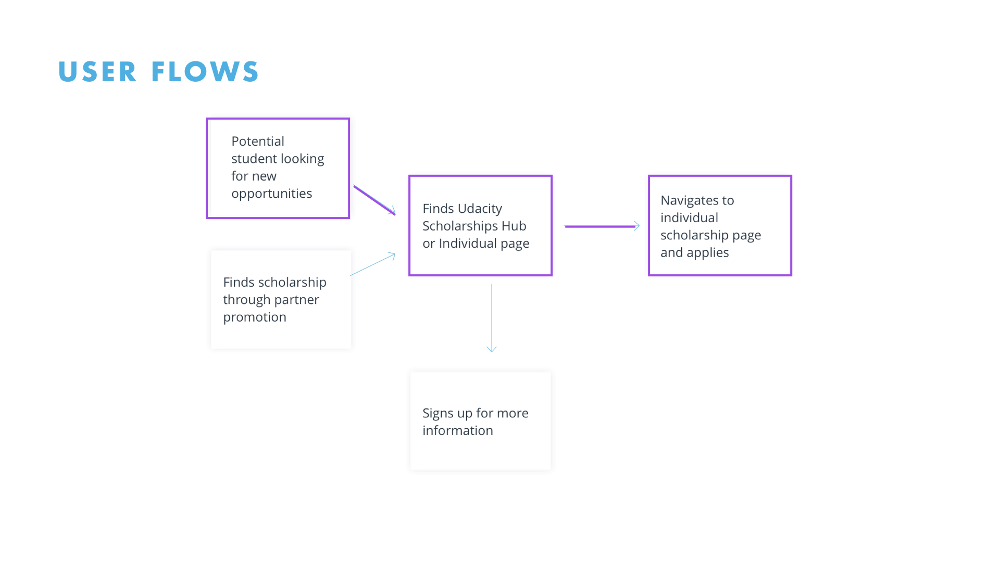
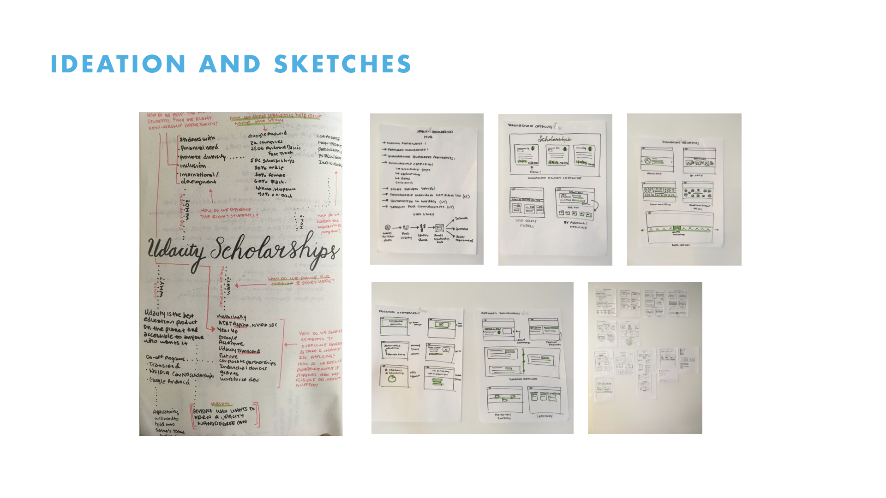
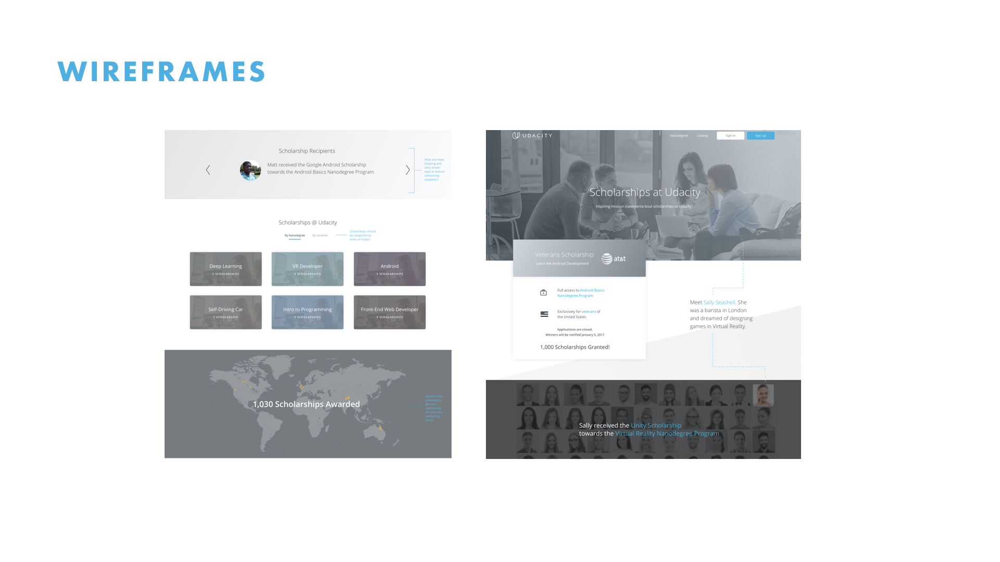
See the final solution here:
Udacity Scholarships
404 Page
Students were not being helped when they got lost on Udacity. I created a 404 page reflected our brand and that re-directed them to the homepage.
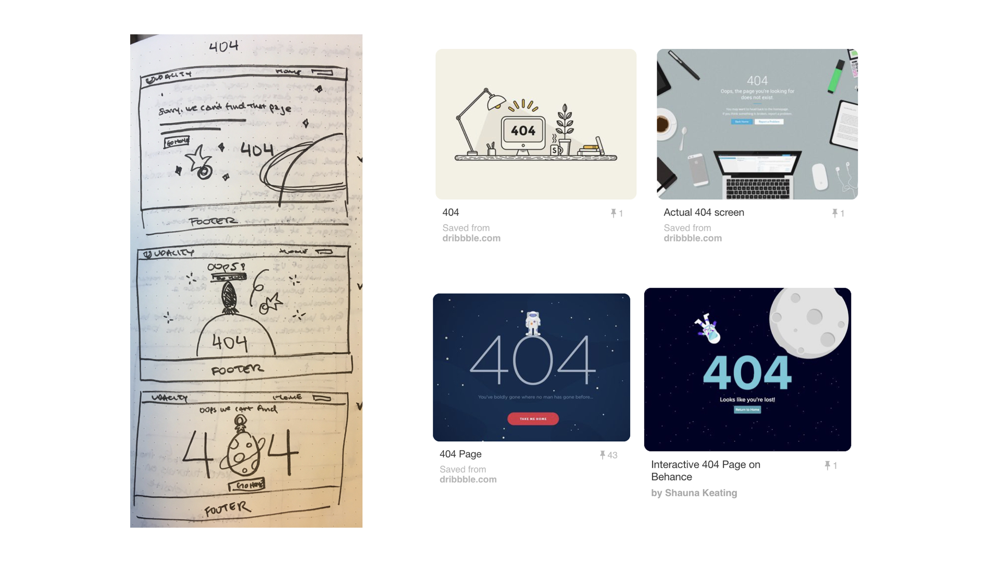
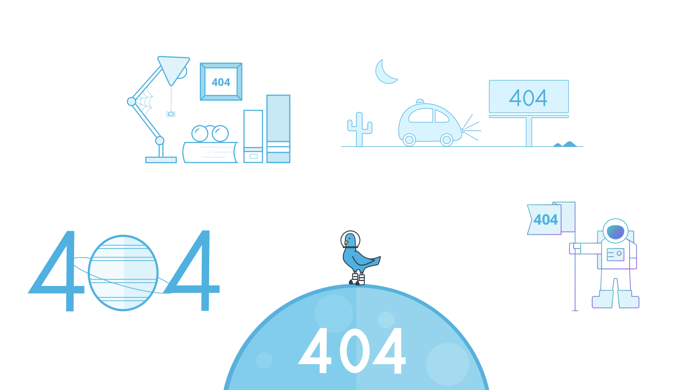
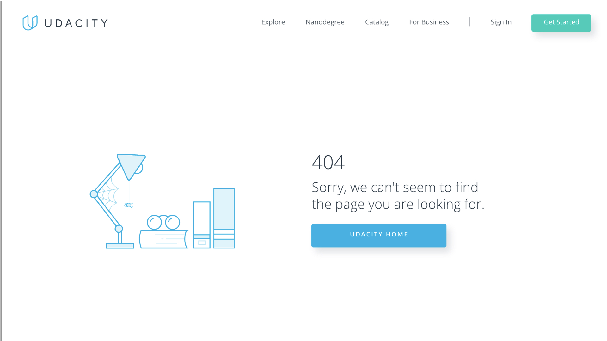
See the final solution here:
Udacity 404
Content Style Guide
The content design process changed within the last year. I designed a style guide that provided visual guidelines and promoted good teaching practices for instructional videos.
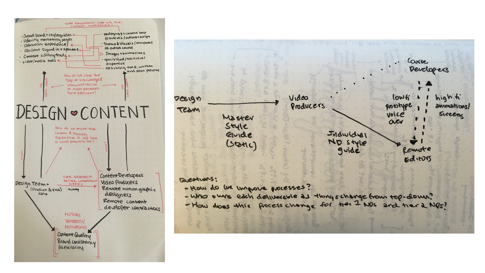
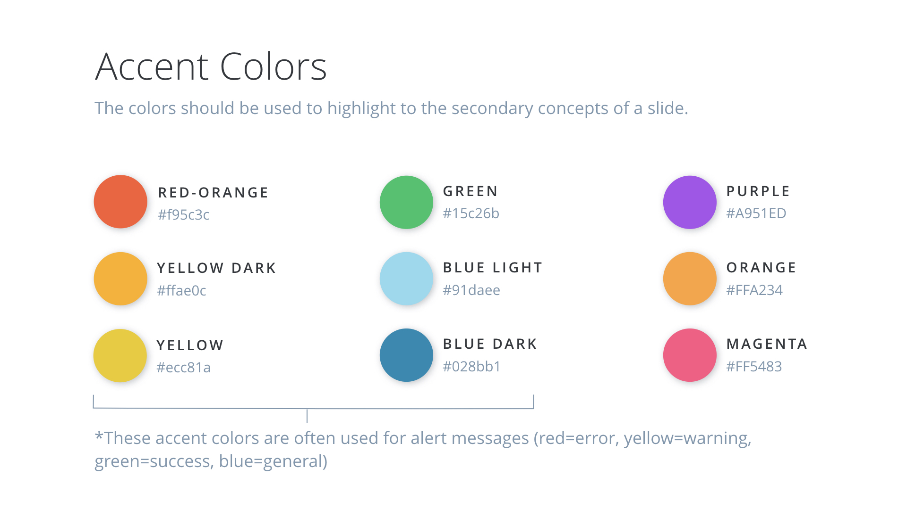
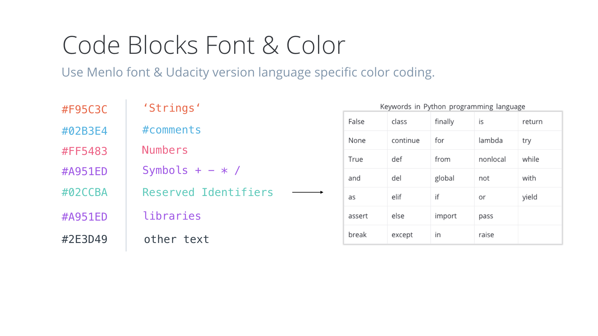
Content Management System
Content developers were frustrated with the content management system. I conducted user interviews and proposed a new commenting feature.
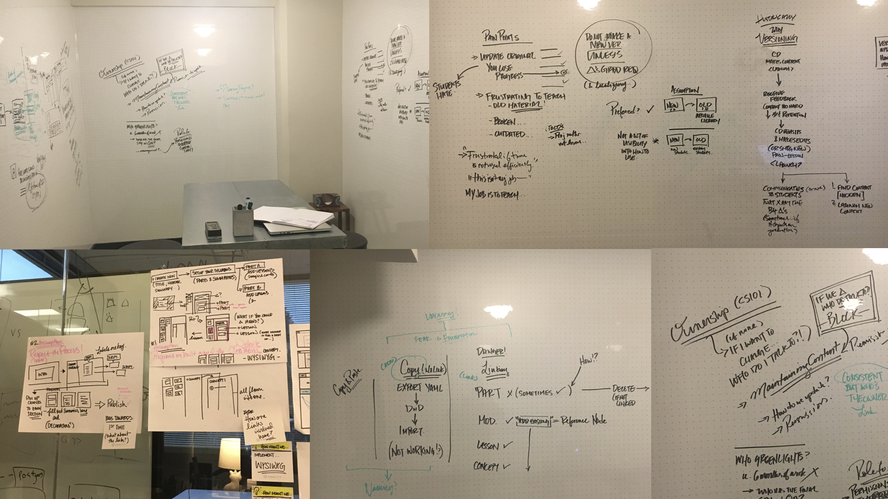
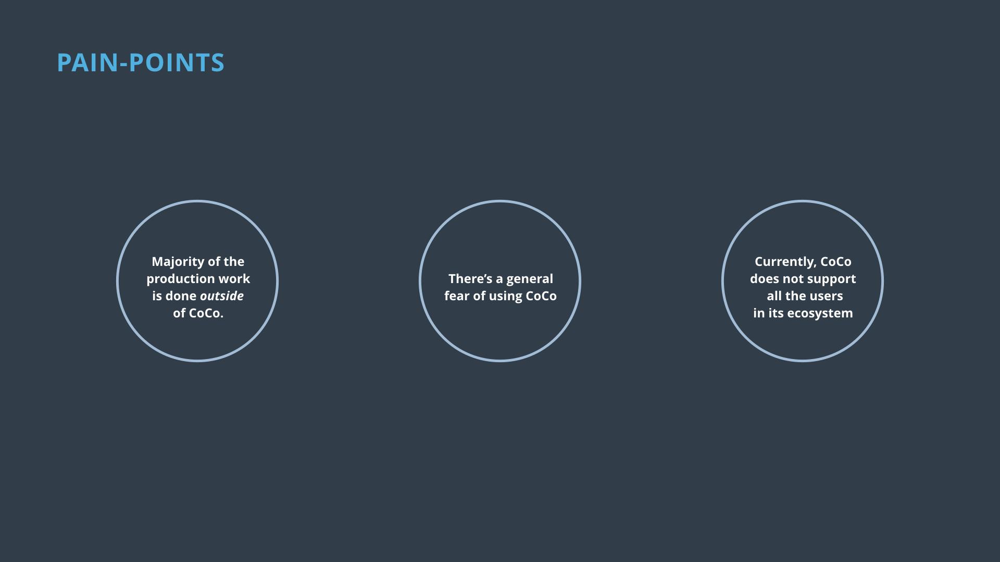
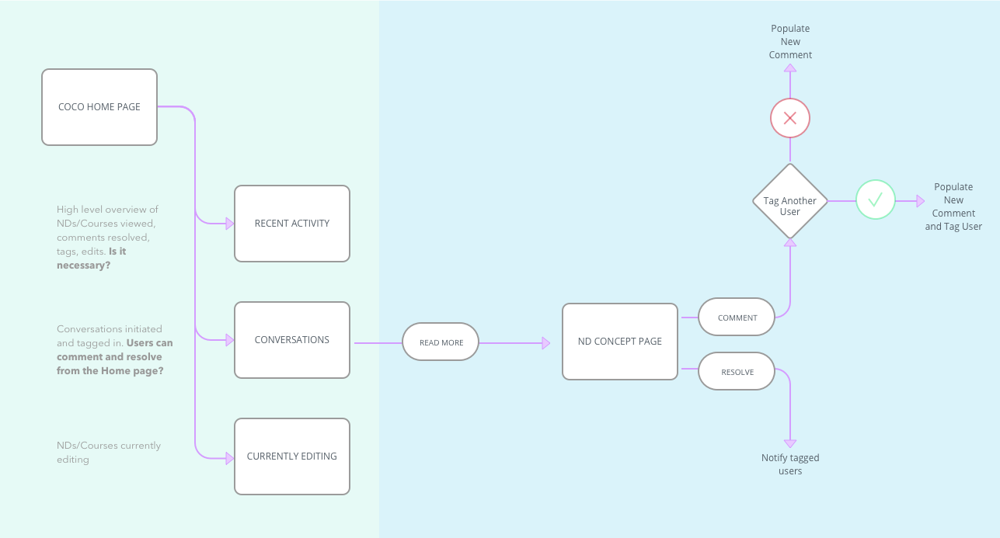
Self-Driving Car Competition
Udacity partnered with Didi to launch a self-driving car competition. I worked with international stakeholders to develop a landing page and marketing asset for participants.
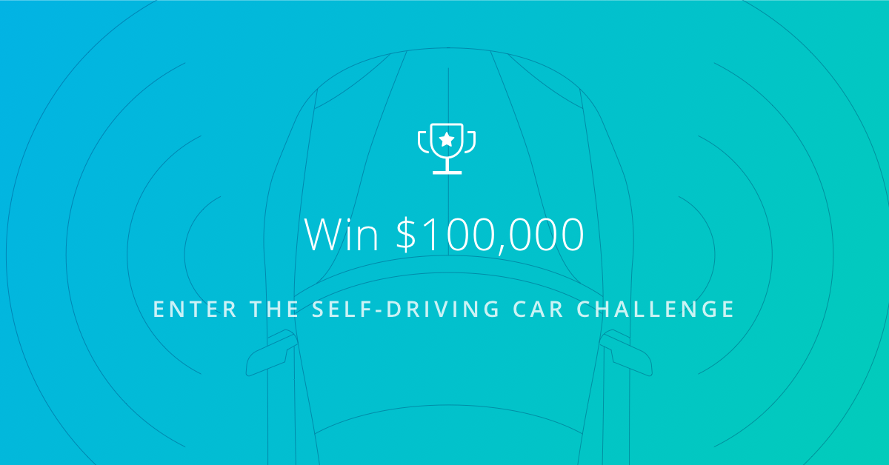
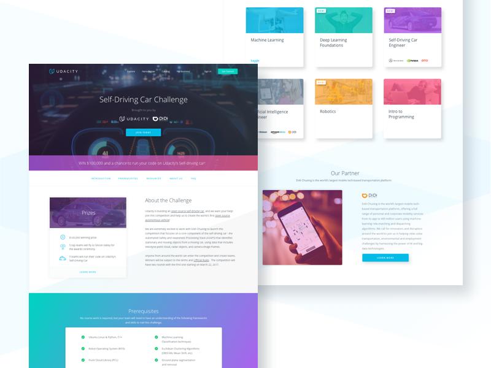
See the final solution here:
Self Driving Car Challenge